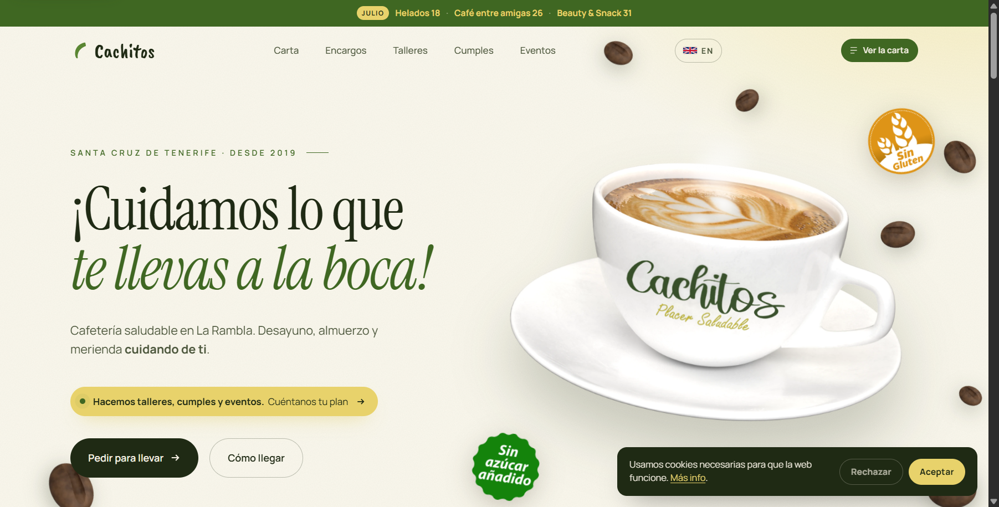

Cachitos: sveikas malonumas Santa Cruz de Tenerife mieste.
Cachitos – kavinė be cukraus ir be glitimo La Rambla bulvare. Jiems reikėjo svetainės, kuri nuo pirmos sekundės keltų pasitikėjimą sergantiems celiakija ir netoleruojantiems tam tikrų produktų, ir kurią būtų lengva nuolat atnaujinti: dirbtuvės, gimtadieniai, mėnesio akcijos.

Iššūkis
Kavinė „be cukraus ir be glitimo“ laikosi ant pasitikėjimo: žmogus, turintis alergiją ar netoleravimą, turi neabejodamas žinoti, ką gali valgyti. Be to, kavinė beveik kas mėnesį rengia dirbtuves, gimtadienius ir renginius, todėl jiems reikėjo galimybės šią informaciją atnaujinti patiems, kad dėl kiekvieno pakeitimo nereikėtų nuo nieko priklausyti.
Be to, jie neturėjo svetainės: meniu buvo „Google Drive“ faile, į kurį vedė nuoroda iš jų „Instagram“, ir QR kode, priklijuotame pačioje kavinėje. Šį meniu sutvarkėme profesionaliai: perkėlėme jį tiesiai į svetainę, suskirstėme pagal kategorijas, ir dabar jis visada aktualus.
Kas padaryta
- Kelių puslapių svetainė Pradžia, Meniu, Užsakymai, Dirbtuvės, Gimtadieniai ir Renginiai – kiekvienas puslapis su savo struktūra.
- Vizualus meniu pagal kategorijas Rinkiniai, skrebučiai, gėrimai ir saldumynai sutvarkyti taip, kad išsirinkti būtų galima iš pirmo žvilgsnio, o rinkiniai – išskirti.
- Pasitikėjimo ženklai visoje svetainėje „Be glitimo“ ir „be pridėtinio cukraus“ matomi jau pradžios puslapyje, o ne paslėpti poraštėje.
- ES / EN kalbos pasirinkimas Sukurtas galvojant apie šios vietovės klientus turistus.
- Mėnesio akcijų juosta Dirbtuvės ir renginiai išskirti pačiame viršuje, juos lengva atnaujinti kas mėnesį.
Sukurta, kad parduotų, o ne tik gražiai atrodytų
Kiekvienas ekranas turi savo tikslą. Pagrindinis blokas (angl. hero – pirmasis ekranas, kurį lankytojas pamato dar prieš slinkdamas žemyn) – ne vien graži nuotrauka: jame yra savi raginimai veikti, pritaikyti tam, ko šiam verslui iš tikrųjų reikia.
- Užsakymas vienu paspaudimu, nieko neieškant Pirmiausia pagrindiniame bloke matomos tiesioginės nuorodos užsisakyti per „Glovo“ ir „Uber Eats“.
- Darbo laikas visada matomas ir aktualus Nereikia tikėtis, kad kas nors kiekvieną sezoną prisimins jį pakeisti rankiniu būdu.
- Kiekvienoje skiltyje – savas raginimas veikti „Užsisakyti išsinešti“ ir „Kaip atvykti“ pagrindiniame bloke, „Žiūrėti meniu“ navigacijoje: jokio vieno bendro mygtuko, kartojamo visoje svetainėje.
Rezultatai
Jau pirmaisiais mėnesiais svetainės nauda matėsi realiuose duomenyse:

770 apsilankymų ir 1 440 puslapių peržiūrų, vidutinis įkėlimo laikas – 559 ms, o „Core Web Vitals“ rodikliai (LCP, INP ir CLS) žali didžiojoje daugumoje apsilankymų: būtent tai „Google“ vertina labiausiai, kai aukščiau rodo vietos verslo svetainę. Be to, beveik 2 puslapių peržiūros per apsilankymą: žmonės užeina ir naršo meniu bei kitas skiltis, o ne tik pažiūri pradžios puslapį ir išeina.
Techninės detalės
Individualiai parašytas kodas, be bendrinių šablonų: nuosavas HTML, CSS ir JavaScript, kad svetainė greitai įsikeltų net su daugybe produktų nuotraukų. Įdiegtas techninis SEO (svetainės žemėlapis, robots.txt, „Open Graph“ metaduomenys dalijimuisi socialiniuose tinkluose) ir BDAR (Bendrojo duomenų apsaugos reglamento) reikalavimus atitinkantis pranešimas apie slapukus.
Norite kažko panašaus savo verslui?
Papasakokite, kuo užsiimate, ir atsakysime su planu bei fiksuota kaina.
Parašykite numeriu 682 292 137